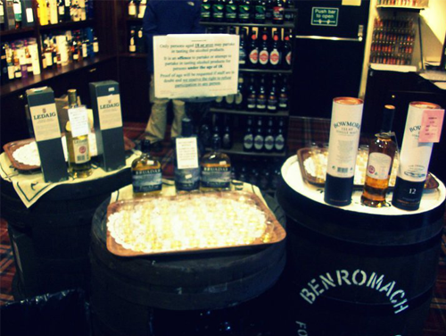

Colorblocking has been a big trend lately and I must say I am a big fan. The limited has some uber cute options for anyone who shares my opinion of this trend. That kimono top and halter top are needed in my wardrobe stat!
Sending you to Rehab
July 28, 2011 by
I was in my local grocery store stocking up on Monsters when I came across something that i felt the need to share with you ladies. Me and my sister are a bit obsessed with the low cal monster drinks to begin with, so when i saw Monster Rehab on the shelf I was super excited. Its a tea and lemonade energy drink with only 10 calories! I was a bit skeptical at first, being that it is not carbonated but my worry was all for not. Delicious. It tastes like regular lemonade, with no energy drink taste at all.  So go forth and energize, ladies, your taste buds will thank you.
For all you travelers out there…
June 24, 2011 by
I received a request from a tipsy ready for any travel tips I may have. Always one for sharing my opinons, wanted or not, I thought I would present you ladies with my top 5 travel tips:
1) An oldie but goodie, make a list! And check it twice! Now I know I sound like a Christmas song but seriously, you need to check that list. I always end up forgetting something.
2) Never travel with designer items. Whether it be a handbag or shoes or what. You don’t want to scream “I have money, rob me!” If you are travelling outside of the US everyone will know you are a tourist as soon as you open your mouth, so there is no need to draw extra attention to yourself.
3) Travel with medicine. I always have ibuprofen on me, but when I travel I carry a small pharmacy. I have bad allergies so sudafed or benadryl is a must. I learned this the hard was on my trip to Paris (allergic reaction to laundry detergent = not good). Medicine is expensive in foreign countries too.
4)Â Wear comfortable clothes on the plane but don’t look sloppy! You may not be able to check into your hotel right away so what you wear on the plane might be what you wear your first day of vacay. You don’t want to be in sweats in all your pictures. I usually go with boyfriend jeans and a fitted tee
5) Lonelyplanet.com. I pretty much booked my whole trip to Europe through this site. They have a listing and ratings for any type of lodging you are looking for (hotel, hostel, b&b, etc), as well as a variety of tours in every city. They also have a ranking of all the things you should make sure you do in each city, and forums to ask other travelers any questions you may have.
One last thing…
If you really want something don’t be afraid to splurge! You don’t to get home and be mad at yourself for not buying something when you had the chance, it may not be there if and when you ever go back. Besides, you are supposed to treat yourself on vacation 🙂
God Save The Queen!
June 17, 2011 by
The last portion of my trip was spent in Great Britain. First in Edinburg, Scotland, then in London. Edinburgh might be my favorite place from this trip. Not only was I excited to be in a country that spoke English finally, but my dad’s side of the family is Scottish, so I was able to get a little family history while I was there. I visited the highlands and Loch Ness but, unfortunately, Nessie the Loch Ness Monster did not make an appearance.  I did, however, get to taste some excellent whiskey. London was also fabulous. Lots of friendly people, and we found a restaurant owned by 3 Texans. Who would have thought you could find good Mexican food in London? AND they give free margaritas to anyone from Texas. Needless to say we were happy campers that night.  Here are some fun facts I picked up about the UK:
1) Scottish people think 82 degrees is hot. I had to explain to them that they don’t know the half of it.
2) Scotland does whiskey tastings the way most places do wine tastings.
3) Scottish people really know how to make bread and fudge. Two things not good for my waistline.
4) In the UK an eraser is called a rubber. So when a little kid asks you for a rubber don’t have a heart attack.
5) Oxford University is not actually on Oxford street in London. Its not in London at all actually.
6) London Bridge is not very impressive. The Tower bridge is the cool one.
7) London has better clothing than Paris. True Story.
8) Scotland is freezing in May. London is just cold.



Sacré bleu!
June 15, 2011 by
The title of this post can generally sum up my thoughts and feelings after my trip to Paris (it is also one of my favorite French phrases). I cannot tell you how excited I was to go to the fashion capital of the world. The world, people! I had dreams about all the amazing clothes and shoes I would find, and was worried that my will power was not strong enough to not spend my life savings in this city.  My illusions were shattered as soon as I left my hotel. The first Parisian I came across was an older gentleman, maybe in his 50s, and he was wearing a blue jean mini skirt with leggings. No, he was not dressed in drag, per say, he was just in a mini skirt. From the waist up he was dressed like a man. I held back my judgmental side at first, thinking this was just a fluke, but no. I did not see a single person whose outfit I liked. I was determined to buy one item from Paris though, just so I could tell people I got it in Paris. It was a struggle to find something I actually liked in any of the stores. Needless to say, I was disappointed. So, things I learned about Paris?
1) Should not be the fashion capital of the world. Period the end.
2) It really is dirty. Like smells like a giant urinal. Parisians just pee where ever the want apparently (I have a picture of a street sign to illustrate)
3) The Lourve is humongous. It  never seems to end. According to the tour guide it will take you 8 years to look at every painting in the Lourve for 30 seconds.
4) Nutella crepes might be the best food invention man has ever created.
5) French people do not not like Americans, they just don’t like anyone who isn’t French.
6) Crepe making is an art.
7) No building in Paris is more than 7 stories tall.
8) French mustard is so spicy it will clear your sinuses.
9) Paris is cold in May.
10) Madeleines are addicting.


Stay tuned for the last portion of my trip…
When in Rome…
June 13, 2011 by
Hello Ladies! It has been quite a while since I have posted on here. While Tipsy was on hiatus I did a little world traveling and thought I would share some moments with you. I started my adventures in Rome.  You know that saying do as the Romans do? Well if the Romans drank lots of wine and ate lots of gelato, I got it covered. I also made my way through Florence (Tuscan wine? Yes please!) and to Venice.  I saw all the main sites, went wine tasting at a castle/Tuscan vineyard, and took a hiking trip along the coast. Here are a few things I learned about Italy along the way:
1) Italians are very forward, and they love Americans. I had my hands and cheeks kissed by strangers too many times to count.
2) The cheapest bottle of wine at a restaurant in Italy is as good as the most expensive bottle at a restaurant in America. Sad day for us.
3) Fashion in Italy=not so great. It was a struggle for me to find clothing worth the outrageous prices.
4) Food in Italy=A-amazing. Even the weird things (Pasta with bacon and eggs? Best dish I had)
5) Real Italian restaurants don’t give you free bread. Only in America. Sad day for them.
6) All Italians drive like bats out of hell. They don’t drive in lanes, and generally don’t follow traffic signals. And they do not stop for pedestrians. I was almost run down by a taxi and a tour bus, on separate occasions
7) Venice is very small. And kind of smells like sewage from the gross water. But gorgeous to look at.
8 ) People actually still live in castles in the Italian countryside. I got to go in one.
9) My favorite drink Diet Coke, which Der and I affectionately call DC, is not called that in Italy. It is Coca Cola Light. Or CL as I like to call it.
10) Fire departments go out on runs about every 2.5 Â minutes. Seriously. There were constant sirens. It may have something to do with the lack of driving ability.
Here are a few snap shots from my trip. That strange girl in some of the photos is my college roommate and best friend who took the trip with me.


Stay tuned for more highlights from the rest of my trip…
Fabulous Footwear Friday
May 6, 2011 by
I come across these babies whilst browsing through my local express the other day and I could barely contain my drool. SOO Frickin Cute!!
Calypso Cool Part Deux
May 5, 2011 by
I’m back again with more from the Calypso St. Barth for Target line, but this time its items for your home. Everything has a very middle east vibe to it and is in bright colors. Perfect summer additions to any home!
Calypso Cool
May 4, 2011 by

Has anyone else seen the new designer line at Target?? Â Calypso St. Barth for Target is so cute and summer-y! These items are definitely must haves for my summer wardrobe.
- Embroidered Tie Waist Tank
- Print Dress in Cerise Queen
- Tie-Dye Print Sleeveless Crochet-Bib Tank
- Embroidered Skirt
- Fan Print Espadrille Wedge Sandals
- Sleeveless Dress with Beading
- Romper
- Dip Dye Scarf with Tassels
Stay tuned for home goods from this designer…
New York State of Mind
May 3, 2011 by

I hadn’t been to a mall in months (shocking, I know) when I ventured into one this past weekend. New York and Co is one of my favorite stores, but they have even shocked me with the level of cuteness going on in there. Take a look at these beauties…


Recent Comments